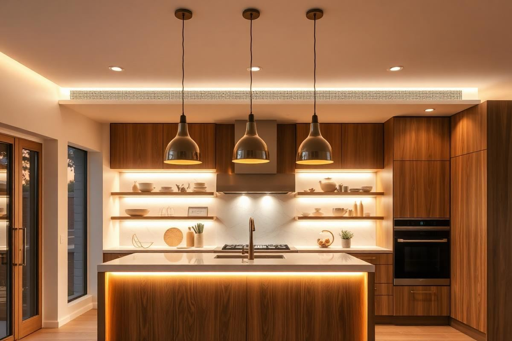
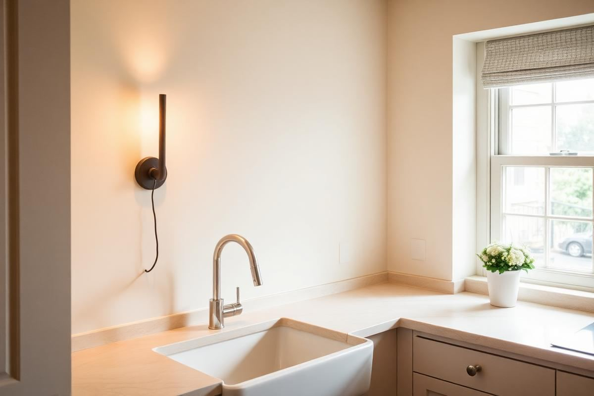
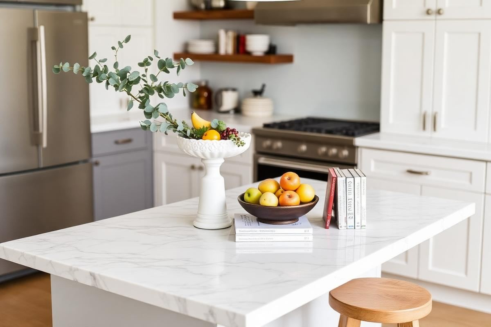

Kitchen Lighting Ideas: A Practical Layering Guide

A kitchen is the only room in the house where you do precision work with sharp objects, then sit down to eat two metres away. It has to be bright and functional at seven in the morning and soft enough for dinner at eight at night, and a single ceiling fitting cannot do both. Everything below is built around that conflict, and solving it takes three separate layers on three separate switches.
The three layers every kitchen needs
Task lighting illuminates the surfaces where you actually work. Ambient lighting fills the room and stops the task lights reading as isolated pools. Accent lighting adds interest — a pendant over the island, a light inside a glazed cabinet, a strip beneath a plinth. Every kitchen I have worked on that felt wrong was missing at least one of these, and usually it was the ambient layer.
Plan them in that order, because task lighting dictates where everything else can go.
Task lighting: get this right first
If you stand at your worktop and your own body casts a shadow over the chopping board, your task lighting is missing. Ceiling downlights placed in the middle of the room always produce this, because you work with your back to them. The fix is under-cabinet lighting: an LED strip or a run of linear fittings mounted at the front edge of the wall unit, not at the back.
- Mount strips at the front edge of the cabinet underside so light falls on the worktop, not the splashback.
- Add a diffuser channel — bare LED strip reflects as visible dots in a gloss splashback.
- Target 300 to 500 lumens per linear metre of worktop.
- Give under-cabinet lighting its own switch; you will use it alone more often than you expect.

The sink and the hob need their own attention because neither usually has a cabinet above. A downlight positioned 6 to 8 inches forward of the sink centre, or a slim sconce on the adjacent wall, covers it. Most extractor hoods include a light over the hob; if yours is dim, replacing the lamp is usually a five-minute job.
Pendant heights and spacing
Pendants over an island should hang with the bottom edge 30 to 36 inches above the worktop. Lower than 30 and tall people knock them; higher than 36 and they stop feeling connected to the surface. For a dining table, drop slightly lower — 28 to 32 inches above the tabletop — because nobody stands under it.
- Two pendants suit an island up to about 72 inches; three for anything longer.
- Space them evenly with the outer pendants set in from the island ends by at least 12 inches.
- Keep pendant diameter under a third of the island width so the surface stays usable.
- If your ceiling is above 9 feet, add 3 inches to the drop for every extra foot of height.
The ambient layer
Ambient light is what stops a kitchen looking like a stage set with lit patches and dark corners. Recessed downlights on a perimeter grid work, but so does a single central fitting if the room is small. The trick is placement: run downlights roughly 30 inches out from the wall so they wash the cabinet fronts rather than the middle of the floor, and space them at about 1.5 times the ceiling height.
In a kitchen-diner, treat the two zones separately. The cooking end needs even, functional light; the eating end should be softer and lower, ideally from a pendant and a lamp rather than from the ceiling grid.
Colour temperature and CRI
Use 2700K to 3000K throughout. Anything cooler than 3500K makes timber look grey and food look unappetising, which is why kitchens lit at 4000K feel like a supermarket aisle. Just as important is colour rendering index: specify CRI 90 or above so ingredients look like themselves. A CRI 80 lamp will render a red pepper noticeably dull.
Whatever you choose, keep it consistent. Mixing 2700K under-cabinet strips with 4000K downlights is the single most jarring lighting error I see, and it is entirely avoidable.
How bright should a kitchen be?
As a working target, aim for roughly 300 to 400 lumens per square metre of floor area across all layers combined. A 12 square metre kitchen therefore wants somewhere around 4000 lumens total, split across the three layers rather than concentrated in the ceiling. Worktops themselves want more — around 500 lux at the surface — which is exactly why the under-cabinet layer matters so much.
Dimmers, switching, and scenes
Put every circuit on a dimmer and check the driver is dimmable before you buy; a non-dimmable LED will flicker or buzz. Three switched circuits — task, ambient, accent — give you every scene a kitchen needs: everything on for cooking, task only for making coffee at six in the morning, and accent plus pendants for evenings.
- Trailing-edge dimmers for LED; leading-edge units cause buzzing.
- Place switches at the room entrance and again near the main work zone.
- Consider a plinth strip on a separate switch as a night light.
- Smart bulbs are fine, but hard-wired dimming is more reliable for daily use.
Common kitchen lighting mistakes
The five I correct most often: downlights placed in the centre of the ceiling instead of over the work zones; no under-cabinet lighting at all; mixed colour temperatures; pendants hung too high; and every fitting on one switch. Fixing the first two transforms how a kitchen functions, and neither requires new cabinetry.
Test any plan at night before signing it off. Daylight hides almost every lighting fault, which is why kitchens that were specified in a showroom at eleven in the morning so often disappoint at seven in the evening.
Key takeaways
- Plan task, ambient, and accent layers on three separate switches.
- Under-cabinet strips at the front edge remove worktop shadows.
- Hang island pendants 30 to 36 inches above the surface.
- Keep everything at 2700K to 3000K with CRI 90 or above.
- Test the scheme at night before you sign it off.
Frequently asked questions
How high should kitchen island pendants hang?
The bottom edge should sit 30 to 36 inches above the worktop. Over a dining table, drop to 28 to 32 inches.
What colour temperature is best for a kitchen?
2700K to 3000K with a CRI of 90 or above. Cooler light makes timber look grey and food look unappealing.
Is under-cabinet lighting worth it?
It is the single most valuable layer in a kitchen. Ceiling lights put your own shadow on the worktop; under-cabinet strips remove it.
How many lumens does a kitchen need?
Around 300 to 400 lumens per square metre across all layers, with roughly 500 lux at worktop level.
How many pendants should go over an island?
Two for islands up to about 72 inches, three for longer runs, spaced evenly and set in at least 12 inches from each end.

Sophia Bennett is a certified interior stylist and the senior editor at Styleire. She has spent more than eight years helping homeowners and renters create warm, functional interiors, with hands-on experience across small city apartments and family homes. Her work has been informed by close collaboration with independent designers, craftspeople, and product testers.
View full profile →Related reading

Open Kitchen Shelving: When It Works, When It Doesn't
Open shelving looks great in photos. In real kitchens, it is a lifestyle choice, not a style choice.

Dining Room Lighting Guide: Pendants, Height, and Bulbs
A great dining room comes down to one fixture, hung correctly, with the right bulb.

Kitchen Island Styling: What Belongs, What Doesn't
Kitchen Island Styling: What Belongs, What Doesn't — a clear, editor-tested guide covering the essentials without the filler.